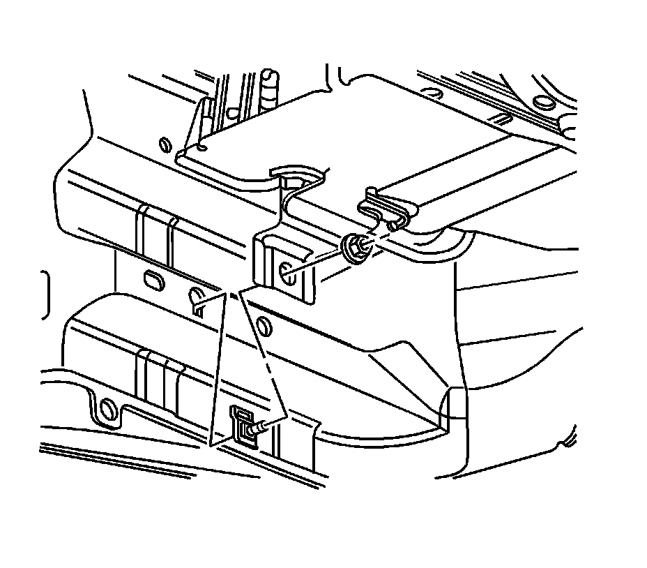
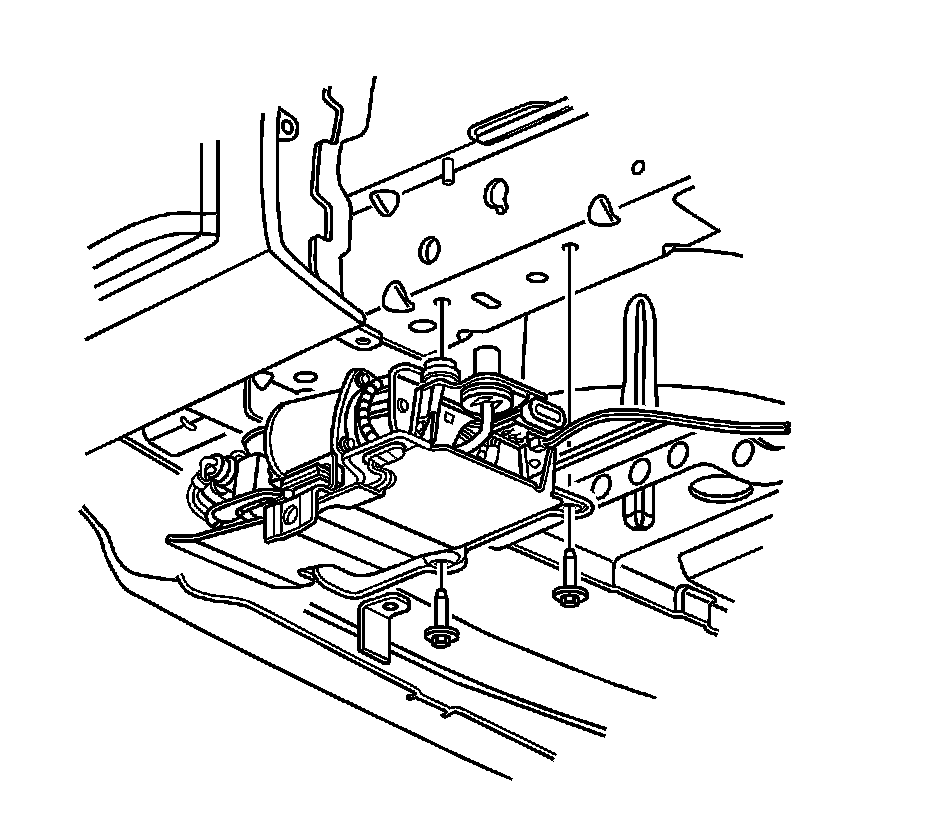

Air Compressor Replacement
Air Compressor Replacement
Removal Procedure
1. Raise and support the vehicle. Refer to Lifting and Jacking the Vehicle (Service and Repair) .
2. Disconnect the exhaust system from the rear exhaust hangers.
3. Remove the automatic level control (ALC) compressor bracket mounting bolts.
4. Carefully lower the ALC compressor assembly.
5. Twist the air tube at the ALC compressor clamp.
6. Disconnect the air tube from the ALC compressor.
7. Disconnect the ALC electrical harness connector.

8. Remove the ALC compressor bracket side mounting nut.
9. Remove the ALC compressor with the bracket from the vehicle.

10. Remove the ALC compressor top bracket mounting screw.
11. Remove the electrical harness connector from the ALC bracket.
12. Disconnect the bleed hose from the clip.
13. Remove the ALC bracket to ALC compressor screws.
14. Remove the ALC bracket from the ALC compressor.
Installation Procedure
1. Position the ALC bracket to the ALC compressor.
Notice: Refer to Fastener Notice (Fastener Notice) .
2. Install the ALC bracket to ALC compressor screws.
Tighten the screws to 9 N.m (80 lb in).
3. Connect the bleed hose to the clip.
4. Install the electrical connector to the ALC compressor bracket.
5. Connect the air tube to the ALC compressor.
6. Connect the ALC electrical harness connector.
7. Install the ALC bracket side mounting nut.
8. Install the ALC bracket mounting bolts.
Tighten the bolts to 9 N.m (80 lb in).
9. Connect the exhaust system the rear exhaust hangers.
10. Lower the vehicle.